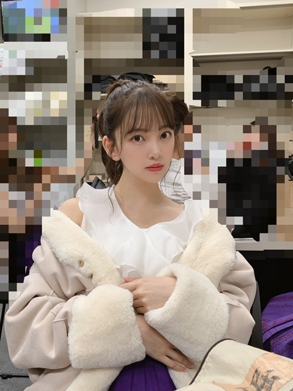

2020/0504Mon考えるのはスキ考えすぎるのはニガテ
写真集のタイトル、表紙解禁の
反響嬉しいです!
ありがとうございます☺︎
さて、
今日は私が人として女性として女優として
尊敬するオードリーヘップバーンさんの
お誕生日です
実は写真集のTwitterを見ていただいた方は
お気づきになっているかもしれませんが
5月27日発売2nd写真集内に
オードリーヘップバーン
リスペクトページもあります
" ティファニーで朝食を "
のオマージュをしてます☺︎ 是非見てね
オードリーヘップバーンさんの
圧倒的な美しさと存在感と生命力と強さ
見た目ももちろん美しいのですが
滲み出る内面からの美しさに
魅力を感じます
そして考え方や生き方にも沢山の事を
学びました
本を読んだり映画を観たりして彼女のことを
本を読んだり映画を観たりして彼女のことを
知る度にこんな女性になりたい!と思います
特にすきな名言(有名なのでご存知な方も多いかな)
今日はご紹介します❤︎
チャンスは滅多にめぐってこない。だから、いざめぐってきた時にはしっかりつかまなければならない
人生について深刻に考えたりはしないけど...私の人生で何をするかは真剣に考えているわ
不可能なことなどないわ。Impossible（不可能）という単語自体に、I'm possible（私にはできる）と書いてあるのだから
愛とは行動。口先だけのものではないの。言葉だけで済んだことなんて一度もなかった
最高の勝利は、自分の欠点を受け入れられ、ありのままの自分で生きられるようになったこと
歳を重ねると、自分に手が2つあることを知るはず。1つは自分自身を助けるため、もう1つは他者を助けるために
一番好きなことは笑うこと。人として最も大事なことじゃないかしら
全部が素敵な言葉すぎて...
歳を重ねると、自分に手が2つあることを知るはず。1つは自分自身を助けるため、もう1つは他者を助けるために
一番好きなことは笑うこと。人として最も大事なことじゃないかしら
全部が素敵な言葉すぎて...
常に心に置いておきたい言葉です

強さと優しさを兼ね備えた
厚みのある人になれるよう私もがんばらなきゃ!

お猿さんの名前 " もんぞー "
にきまりました☺︎
たくさんのご意見ありがとうございました!
もふもふしていてきもちいのでつい
もふもふしていてきもちいのでつい
つぶれちゃうんじゃないかっていうくらい
ぎゅーと抱きしめながら寝ています
お昼も、もんぞーをギュッとしたまま
ゲームしていました笑
あ！あの！
プレステ4
DS
switch のおすすめソフト教えてください!
ゲーム元々好きなんですけど
最近おうち時間利用してまたやりだしたので!
ちなみにやってた(やってる)
ゲームソフトの一部↓
どうぶつの森
荒野行動
ナルト
スマッシュブラザーズ
バイオハザード
気になるのは
マインクラフト
スプリンターセル
デスストランディング
メタルギア
ホラーゲーム
謎解き系
闘う系かなぁ
バイオハザードRe:3は7を
クリアしたら手つけます!笑
推しゲーム
教えてください❤︎


でははは
2020/05/04 19:52
コメント(933)
ポケモンとマリオカートがオススメかな
堀ちゃんブログ更新ありがとう！！
オードリーヘップバーンさんの言葉は重みがありますね。僕にも刺さりました。
俺も最近、自分のやっているスポーツのラグビーにおいてすごく刺さる言葉がありました。
堀ちゃんもワールドカップを見てたと言ってたのでよりラグビーを理解出来るこの言葉を・・・
俺と同じポジションですごく尊敬している人です。
前回のワールドカップで7番フランカーでありもう1人のキャプテンと言われたピーター・ラブスカフニ選手が言った言葉です。
ラグビーは・・・
『人と人との繋がりの弱い部分をお互いがカバーするゲームだ。』
実際にやっている身だからこそより染みましたし、今、一緒に切磋琢磨している仲間がより一層大切で頼れる存在になりました。
自分に仲間を信じることの大切さを教えてくれた言葉です。
それからおすすめのゲームソフトがあります！！
3DSソフトの『レゴシティアンダーカバー』です。捜査や犯人との対峙もあるので謎解きと格闘を兼ね備えたゲームです。
僕は結構ハマりました。www
ぜひやってみて下さい♪♪
いつもブログ更新ありがとうございます。
堀ちゃんのブログを読むのが毎日楽しみです！
オードリーヘップバーンさんの言葉は重みがありますね。僕にも刺さりました。
俺も最近、自分のやっているスポーツのラグビーにおいてすごく刺さる言葉がありました。
堀ちゃんもワールドカップを見てたと言ってたのでよりラグビーを理解出来るこの言葉を・・・
俺と同じポジションですごく尊敬している人です。
前回のワールドカップで7番フランカーでありもう1人のキャプテンと言われたピーター・ラブスカフニ選手が言った言葉です。
ラグビーは・・・
『人と人との繋がりの弱い部分をお互いがカバーするゲームだ。』
実際にやっている身だからこそより染みましたし、今、一緒に切磋琢磨している仲間がより一層大切で頼れる存在になりました。
自分に仲間を信じることの大切さを教えてくれた言葉です。
それからおすすめのゲームソフトがあります！！
3DSソフトの『レゴシティアンダーカバー』です。捜査や犯人との対峙もあるので謎解きと格闘を兼ね備えたゲームです。
僕は結構ハマりました。www
ぜひやってみて下さい♪♪
いつもブログ更新ありがとうございます。
堀ちゃんのブログを読むのが毎日楽しみです！
堀さんは、乃木坂で一番「待ち合わせ」が似合いますね。
長い髪を切るときはアン王女の気持ちだったのでしょうか。
長い髪を切るときはアン王女の気持ちだったのでしょうか。
ゲーム楽しいですよね！
自分もバイオハザードやってます。
結構グロい系は好きです。
他にはパワプロとかウイイレとかやってます！
スポーツ系も楽しいのでやってみてください‼️
めっちゃリアルですごいです(o_o)
自分もバイオハザードやってます。
結構グロい系は好きです。
他にはパワプロとかウイイレとかやってます！
スポーツ系も楽しいのでやってみてください‼️
めっちゃリアルですごいです(o_o)
ブログ更新ありがとう❗️
もんぞー良い名前だし似合ってる
PS4だとデスストランディングとメタルギアは良いよ。
モンハンやデビルメイクライとかもおすすめ
闘う系は格ゲーで良いのかな？それなら鉄拳7だね。
もんぞー良い名前だし似合ってる
PS4だとデスストランディングとメタルギアは良いよ。
モンハンやデビルメイクライとかもおすすめ
闘う系は格ゲーで良いのかな？それなら鉄拳7だね。
"かまいたちの夜"おすすめです。キャラクターを操るわけではないですがサウンドノベルホラーでセリフの選択肢で犯人を探すゲームです！
最近のゲームは詳しくないです。
(^-^;)
買ってもやる時間がないから10年程ブランクがあったんです。
そして二年前くらいから昔のゲームを少しずつ遊んでいる現状です。
私も教えてほしいです。
(^-^;)
買ってもやる時間がないから10年程ブランクがあったんです。
そして二年前くらいから昔のゲームを少しずつ遊んでいる現状です。
私も教えてほしいです。
更新ありがとうございます！
Switchで最近発売したナルティメットストームはどうでしょうか
Switchで最近発売したナルティメットストームはどうでしょうか
未央奈さん、昨日もブログ更新ありがとうございます。
写真集、私はジブリぽいと言う表紙が好きですね。
オ―ドリ―ヘプバーンは私も好きな女優さんですよ。「ロ―マの休日」「ティファニーで朝食を」の2作品
が1番好きな2本ですね。
(^-^)
CRYSTALより。
写真集、私はジブリぽいと言う表紙が好きですね。
オ―ドリ―ヘプバーンは私も好きな女優さんですよ。「ロ―マの休日」「ティファニーで朝食を」の2作品
が1番好きな2本ですね。
(^-^)
CRYSTALより。
みおな、こんばんは。
オードリーの誕生日でしたか。
実を言うと、僕もオードリーは大好きです。中学の頃に見たローマの休日で、一辺にファンになってしまいました。
シャレード、ティファニーで朝食を等、彼女の映画はほぼ見ていますね。
晩年の慈善活動家としての彼女には、尊敬の念しかありません。
みおなは、何故彼女のことを好きになったのですか？
オードリーの誕生日でしたか。
実を言うと、僕もオードリーは大好きです。中学の頃に見たローマの休日で、一辺にファンになってしまいました。
シャレード、ティファニーで朝食を等、彼女の映画はほぼ見ていますね。
晩年の慈善活動家としての彼女には、尊敬の念しかありません。
みおなは、何故彼女のことを好きになったのですか？
アンチャーテッド ps4 ですね。
シリーズ 5作あります。
映画のようなクオリティ。ハラハラ感と映像美。
インディージョーンズのようなストーリーです。
めっちゃおもろい
シリーズ 5作あります。
映画のようなクオリティ。ハラハラ感と映像美。
インディージョーンズのようなストーリーです。
めっちゃおもろい
グランド・セフト・オートおすすめ！☺︎
ブログ更新ありがとうございました！
写真集、表紙やタイトルが発表され、発売に近づいていると実感しました。
楽しみです。
また、名言ありがとう。悩むことも多く、今回の名言は前向きにしてくれました。
このような時期ですが、前向きに行きましょう。
ゲームの事は分からず申し訳ありません。
ブログ更新待ってます。
写真集、表紙やタイトルが発表され、発売に近づいていると実感しました。
楽しみです。
また、名言ありがとう。悩むことも多く、今回の名言は前向きにしてくれました。
このような時期ですが、前向きに行きましょう。
ゲームの事は分からず申し訳ありません。
ブログ更新待ってます。
こんばんみーお♪
ブログありがとう！
明けて
7周年おめでとう☆
こんな時だからこそ
お祝いが出来る事が嬉しいな〜
いろいろ、やりたい事もあると思うけど
とにかく、今は健康にだけは気をつけてね♪
そして、
いつかライブで舞おうね〜♪
それから、最近のゲームは
よくわからんのよ
メタルギアは大昔にやったけど。。笑
では、今日は
ワシも初心にかえって
仕事を頑張って来るね♪
そう、今日も仕事なんよ
今は、仕事が出来る有り難さを噛み締めるよ。。
でははは
おやすみおな〜♪
いい夢みおな〜☆
わたる⊿
ブログありがとう！
明けて
7周年おめでとう☆
こんな時だからこそ
お祝いが出来る事が嬉しいな〜
いろいろ、やりたい事もあると思うけど
とにかく、今は健康にだけは気をつけてね♪
そして、
いつかライブで舞おうね〜♪
それから、最近のゲームは
よくわからんのよ
メタルギアは大昔にやったけど。。笑
では、今日は
ワシも初心にかえって
仕事を頑張って来るね♪
そう、今日も仕事なんよ
今は、仕事が出来る有り難さを噛み締めるよ。。
でははは
おやすみおな〜♪
いい夢みおな〜☆
わたる⊿
写真集の表紙、タイトル公開されたね！
セブンネットの表紙が好みです！
未央奈ちゃんが取り入れたい内容が入っていたりと、とても楽しみで、早く見たいです！
セブンネットの表紙が好みです！
未央奈ちゃんが取り入れたい内容が入っていたりと、とても楽しみで、早く見たいです！
ブログ更新ありがとう！そして写真集の表紙とタイトルけっていしたね！！！推しメンとして絶対買う！
PS4のおすすめゲームで「ワンピース海賊無双」は爽快感あって面白いよ。
PS4のおすすめゲームで「ワンピース海賊無双」は爽快感あって面白いよ。
僕は今ならFF7リメイクかなぁ。
未央奈が出した中だったらメタルギアシリーズは全部やりました。
あとオススメはPS4のトゥームレイダーシリーズ。
未央奈なら多分好きだと思うから調べてみて！
未央奈が出した中だったらメタルギアシリーズは全部やりました。
あとオススメはPS4のトゥームレイダーシリーズ。
未央奈なら多分好きだと思うから調べてみて！
頻繁にブログ更新してくれてありがとう！
いつも読んでます！
Switchだと、スプラトゥーン2面白いですよ！
闘う系だけど、戦わなくても勝てるし、何よりイカが可愛いです！
いつも読んでます！
Switchだと、スプラトゥーン2面白いですよ！
闘う系だけど、戦わなくても勝てるし、何よりイカが可愛いです！
もんぞーね！もんちー惜しかったな
いい名前ね☀
ローマの休日も大好き。ff7リメイク面白いみたいよ✨
いい名前ね☀
ローマの休日も大好き。ff7リメイク面白いみたいよ✨
男は黙って、グランツーリスモスポーツ。
未央奈ちゃんブログ更新ありがとう
僕のプレ4のおすすめはマイクラと荒野行動やってるならフォートナイトもおすすめです!!
ぜひやってみてください
僕のプレ4のおすすめはマイクラと荒野行動やってるならフォートナイトもおすすめです!!
ぜひやってみてください
ブログ更新ありがとぅー
メタルギアめっちゃおもろいで！バイオも絶対やって！
ハマる。ハマりすぎる。
あとはモンハンかな〜Ҩ(´-ω-｀)
もんぞー！いい名前 bbb
抱きすぎて壊したらあかんで(笑)
じゃたね
バイバイ(^_^)/~~
メタルギアめっちゃおもろいで！バイオも絶対やって！
ハマる。ハマりすぎる。
あとはモンハンかな〜Ҩ(´-ω-｀)
もんぞー！いい名前 bbb
抱きすぎて壊したらあかんで(笑)
じゃたね
バイバイ(^_^)/~~
みおなブログありがとう〜
ps4だとApexとかSwitchならマリカーとか！
ps4だとApexとかSwitchならマリカーとか！
写真集のタイトルと表紙の公開ありがとうございます！！嬉しいですね〜ずっと待ってました！！
オードリーヘップバーンさんの名言、私は初めて知ったのですが、とっても心に響く言葉ばかり！！凄いですね……
今この瞬間から自分の考えが変わるくらい私にとっても大切にしていきたい言葉になりました。
お猿さんのお名前、"もんぞー" に決まったそうで、おめでとうございます。。
ゲームは分からないのです、、ごめんなさい。。
きっと皆さんが楽しいものを提案して下さると思います！！
オードリーヘップバーンさんの名言、私は初めて知ったのですが、とっても心に響く言葉ばかり！！凄いですね……
今この瞬間から自分の考えが変わるくらい私にとっても大切にしていきたい言葉になりました。
お猿さんのお名前、"もんぞー" に決まったそうで、おめでとうございます。。
ゲームは分からないのです、、ごめんなさい。。
きっと皆さんが楽しいものを提案して下さると思います！！
お猿さんは「もんぞー」になったんだね！
かわいい名前だね～。
仲良しな感じが写真からも伝わってくるよ。
かわいい名前だね～。
仲良しな感じが写真からも伝わってくるよ。
ブログ更新ありがとうございます！
オードリーヘップバーンさん、とても好きになりました。
どの名言も心に浸透します！！
ナルトやってたんですか！？ 僕も好きです！
PS4ではワンピースどうでしょうか？ 僕のオススメです！
これからも体調に気をつけて頑張ってください！！
オードリーヘップバーンさん、とても好きになりました。
どの名言も心に浸透します！！
ナルトやってたんですか！？ 僕も好きです！
PS4ではワンピースどうでしょうか？ 僕のオススメです！
これからも体調に気をつけて頑張ってください！！
推しゲームは私にPS4を買わせたファイナルファンタジー7リメイクです！クラウド・ストライフがとにかくかっこよくて、エアリス・ゲインズブールは未央奈ちゃんが憧れるヨーロッパの女の子みたいできれいで、ティファ・ロックハートは強い女の子で星をめぐる壮大なストーリーが良いです！
そして、未央奈ちゃん、デビューから7年おめでとうございます！！！8年目になるのですね……
出来ることならお披露目される時から応援していたかった！！！でも、応援し始めてから5年くらいかな？その間もずっと変化して、成長し続けている未央奈ちゃんを、本当に応援しています！！
本当に大好きで大好きで、毎日楽しく生活していられます。。きっと未央奈ちゃんがいなかったらつまらない毎日だったと思います。
乃木坂に入ってくれて、本当にありがとうございます！
これからもずっとずっと大好きです！！
応援し続けます！！！
出来ることならお披露目される時から応援していたかった！！！でも、応援し始めてから5年くらいかな？その間もずっと変化して、成長し続けている未央奈ちゃんを、本当に応援しています！！
本当に大好きで大好きで、毎日楽しく生活していられます。。きっと未央奈ちゃんがいなかったらつまらない毎日だったと思います。
乃木坂に入ってくれて、本当にありがとうございます！
これからもずっとずっと大好きです！！
応援し続けます！！！
PUBGおもろいです。面白すぎて毎日やっちゃってます。
バイオハザードみたいな一人称視点でもできるし、三人称視点でもできて機能が多いです。あと声優さんのボイスも聴けるので耳の癒しにも☺️
スマホでできるのでよかったら是非！
バイオハザードみたいな一人称視点でもできるし、三人称視点でもできて機能が多いです。あと声優さんのボイスも聴けるので耳の癒しにも☺️
スマホでできるのでよかったら是非！
PS4
サイコブレイク1と2がいいと思います
サイコブレイク1と2がいいと思います
PS4だったら、メタルギアやデスストランディングはおすすめですよ！基本的に小島秀夫さんの作るゲームは面白いものばかりです ️
ポケモン救助隊!!!
Switchでリメイク版が発売されましたが、DSでも青の救助隊という作品でできるのでぜひDS版でやってほしいです。
BGMもほんわかしてますし、突然人間になってしまった主人公のストーリー性にも当時小学生だった僕はとても感動してました！
Switchでリメイク版が発売されましたが、DSでも青の救助隊という作品でできるのでぜひDS版でやってほしいです。
BGMもほんわかしてますし、突然人間になってしまった主人公のストーリー性にも当時小学生だった僕はとても感動してました！
未央奈さんブログ更新ありがとうございます！！！！
私が推してるゲームは、未央奈さんが気になってるマインクラフトと私個人がハマってる、テラリアです！
まずはマイクラを説明します！(結構長くなりますが許してください。)
マイクラは、1980年代に開発されたゲームで、今では結構人気なゲームなんです！マイクラのどこが楽しいかと言うと、自由で、自分だけの世界や物語が作れるって事が、一番の魅力なんです！しかも、初心者でも楽しめるから、全く飽きません！(これは人それぞれなんですけどね。)マイクラではまぁ色んなものが作れるんですけど、自分が特に、友達のを見てびっくりしたものがあります。それは、「警察署」「教会」「学校」「マンション」です！色んな建物を、このマイクラで作れちゃうんですよ。あとは、レッドストーン回路を使って、ガチャガチャみたいなやつを作ったり、自動ドアを作ったり、トロッコの駅を作ったり、色んな実験にも使えます！マイクラは作るのも楽しいし、その作ったもので遊ぶってのも楽しい。まさに今、未央奈さんに遊んで欲しいゲームです。
次はテラリアの説明します！
テラリアはちょっぴりマイクラに似てるんですけど、テラリアはレベルとか実績を上げると、敵とかを倒すのに役に立つ、銃とか防具服とかが強化されるんです。(まだ最近始めたばかりの新人だからよく分かってないけど、とにかく楽しい。)でも、夜になると敵がめっちゃ集まって来てあっという間に殺されます。だから早めに武器は作っておいた方がいいんですよ。
ちょっとながすぎましたかな。
じゃ、またブログ更新した時に！未央奈さんに自分のゲームをおすすめできて良かったです笑
私が推してるゲームは、未央奈さんが気になってるマインクラフトと私個人がハマってる、テラリアです！
まずはマイクラを説明します！(結構長くなりますが許してください。)
マイクラは、1980年代に開発されたゲームで、今では結構人気なゲームなんです！マイクラのどこが楽しいかと言うと、自由で、自分だけの世界や物語が作れるって事が、一番の魅力なんです！しかも、初心者でも楽しめるから、全く飽きません！(これは人それぞれなんですけどね。)マイクラではまぁ色んなものが作れるんですけど、自分が特に、友達のを見てびっくりしたものがあります。それは、「警察署」「教会」「学校」「マンション」です！色んな建物を、このマイクラで作れちゃうんですよ。あとは、レッドストーン回路を使って、ガチャガチャみたいなやつを作ったり、自動ドアを作ったり、トロッコの駅を作ったり、色んな実験にも使えます！マイクラは作るのも楽しいし、その作ったもので遊ぶってのも楽しい。まさに今、未央奈さんに遊んで欲しいゲームです。
次はテラリアの説明します！
テラリアはちょっぴりマイクラに似てるんですけど、テラリアはレベルとか実績を上げると、敵とかを倒すのに役に立つ、銃とか防具服とかが強化されるんです。(まだ最近始めたばかりの新人だからよく分かってないけど、とにかく楽しい。)でも、夜になると敵がめっちゃ集まって来てあっという間に殺されます。だから早めに武器は作っておいた方がいいんですよ。
ちょっとながすぎましたかな。
じゃ、またブログ更新した時に！未央奈さんに自分のゲームをおすすめできて良かったです笑
写真集・・・絶対買います!!。
既にAmazonで複数冊、予約しました!!。
未央奈ちゃんは、いつも私の心の中のど真ん中に居ます。
今度は未央奈ちゃんが再び表題曲のセンターになるのを楽しみに待っています。もちろん なっても ならなくても、私の一番は未央奈ちゃんです。
新型コロナには、くれぐれも気を付けてください。
既にAmazonで複数冊、予約しました!!。
未央奈ちゃんは、いつも私の心の中のど真ん中に居ます。
今度は未央奈ちゃんが再び表題曲のセンターになるのを楽しみに待っています。もちろん なっても ならなくても、私の一番は未央奈ちゃんです。
新型コロナには、くれぐれも気を付けてください。
素敵な言葉達をありがとう～(*^^*)
未央奈ブログ更新ありがとう！！
僕もSwitchでゲームしてます！
やりたいと思ってるゲームはSwitchのゼルダの伝説ブレスオブザワイルドです。
ゼルダの伝説シリーズは謎解きとアクションなので未央奈にピッタリだと思います！！
是非買ってやってみてね！
僕もSwitchでゲームしてます！
やりたいと思ってるゲームはSwitchのゼルダの伝説ブレスオブザワイルドです。
ゼルダの伝説シリーズは謎解きとアクションなので未央奈にピッタリだと思います！！
是非買ってやってみてね！
堀さん、こんばんは。
オードリーヘップバーンの名言はチャンスと欠点のだけなんとなく覚えてました。きっとオードリーヘップバーンも堀さんみたいに、とめどなく襲ってくる不安や逆境に立ち向かうために自身を鼓舞してた結果、周りの人にまで力を与えるような言葉を使えるようになったのでしょうね。
とりあえずリスペクトページのためにもティファニーで朝食をも見直しますね。
ゲームはswitchだとゼルダの伝説ブレスオブザワイルドと、ヒューマン・リソース・マシーンっていうプログラミングパズルにハマってました。
今度PS4でラストオブアス2が出るので、まだだったら1もお勧めですよ。人間ドラマがメインのゾンビもので好きな作品です。ブログの最後の2枚の写真が推しゲーム聞くためにめちゃくちゃ可愛い顔してるみたいでちょっと面白かったです。
オードリーヘップバーンの名言はチャンスと欠点のだけなんとなく覚えてました。きっとオードリーヘップバーンも堀さんみたいに、とめどなく襲ってくる不安や逆境に立ち向かうために自身を鼓舞してた結果、周りの人にまで力を与えるような言葉を使えるようになったのでしょうね。
とりあえずリスペクトページのためにもティファニーで朝食をも見直しますね。
ゲームはswitchだとゼルダの伝説ブレスオブザワイルドと、ヒューマン・リソース・マシーンっていうプログラミングパズルにハマってました。
今度PS4でラストオブアス2が出るので、まだだったら1もお勧めですよ。人間ドラマがメインのゾンビもので好きな作品です。ブログの最後の2枚の写真が推しゲーム聞くためにめちゃくちゃ可愛い顔してるみたいでちょっと面白かったです。
ヤッホー未央奈ブログありがとー❗もんぞーて名前になったんだ笑今日写真集四種×２開けて見る用とストック用と注文しましたよ～❗待ち遠しいけど楽しみです。健康で居ようねー❗
堀ちゃんこんばんは！
「いつかの待ち合わせ場所」
タイトル素敵です、堀ちゃんらしさを感じます(o^^o)
「いつか」ってたしかに過去も未来も指せて、そのうえ時間の指定がない曖昧な言葉ですね( ´ ▽ ` )
それに加えていつかには「いつの間にか」と同じ意味も込められているようで(^^)
いつか(過去)出会って、いつの間にかこんなにも好きになった堀ちゃんに、いつか(未来)また会うための待ち合わせ場所に歩みを進めながら携える写真集
と個人的に解釈させていただきます( ´ ▽ ` )
この未来のいつかはそう遠くない未来なのか、まだ先の未来なのか、これは僕の中でもイメージできてません、その曖昧さがいいです(o^^o)
タイトルと表紙も決まったということで、5/27に向けてさらに楽しみの加速度が上がってきましたー！
表紙もどれも素敵です！甲乙つけるのは非常に苦しいですが…
特に好きなのはHMV限定版です！
明確に表せる言葉はなくて、目にした瞬間になんとなく好き、だったからです( ´ ▽ ` )
感覚的になんとなく好きなのものは、一生好きなものだと個人的に思ってます、きっとこの先ずっとお気に入り(o^^o)
堀ちゃんという女性のことも、お顔が可愛いや声が好き、話し方が好き、ダンスが好きなど、言葉にできる好きもたくさんありますが、なんとなく雰囲気が好き、というのも好きな大きな理由の一つなので、ずっと好きです(o^^o)
そんな大好きな堀ちゃんの写真集がとにかく楽しみです！待ちきれなーい！( ´ ▽ ` )
ちなみに話は変わりますが、僕の好きなゲームは牧場物語シリーズです(^^)笑
どうぶつの森と雰囲気は似てますが、こちらは友達とというよりはゲーム内のキャラクターと関わっていくので、ゲームの世界に入り込めるほのぼのゲームです( ´ ▽ ` )
牛や鶏や野菜をを育てたり、海外をモチーフにしたお祭りに参加したりと、生活感もあって楽しいです(o^^o)
牧場経営とか、現実では難しいけどちょっと憧れてるタイプなので、昔から好きなゲームです！
DSにもスイッチにもソフトがあったと思うので、興味があったらやってみてほしいですー！( ´ ▽ ` )
でははは！またコメントさせてくださいー！
「いつかの待ち合わせ場所」
タイトル素敵です、堀ちゃんらしさを感じます(o^^o)
「いつか」ってたしかに過去も未来も指せて、そのうえ時間の指定がない曖昧な言葉ですね( ´ ▽ ` )
それに加えていつかには「いつの間にか」と同じ意味も込められているようで(^^)
いつか(過去)出会って、いつの間にかこんなにも好きになった堀ちゃんに、いつか(未来)また会うための待ち合わせ場所に歩みを進めながら携える写真集
と個人的に解釈させていただきます( ´ ▽ ` )
この未来のいつかはそう遠くない未来なのか、まだ先の未来なのか、これは僕の中でもイメージできてません、その曖昧さがいいです(o^^o)
タイトルと表紙も決まったということで、5/27に向けてさらに楽しみの加速度が上がってきましたー！
表紙もどれも素敵です！甲乙つけるのは非常に苦しいですが…
特に好きなのはHMV限定版です！
明確に表せる言葉はなくて、目にした瞬間になんとなく好き、だったからです( ´ ▽ ` )
感覚的になんとなく好きなのものは、一生好きなものだと個人的に思ってます、きっとこの先ずっとお気に入り(o^^o)
堀ちゃんという女性のことも、お顔が可愛いや声が好き、話し方が好き、ダンスが好きなど、言葉にできる好きもたくさんありますが、なんとなく雰囲気が好き、というのも好きな大きな理由の一つなので、ずっと好きです(o^^o)
そんな大好きな堀ちゃんの写真集がとにかく楽しみです！待ちきれなーい！( ´ ▽ ` )
ちなみに話は変わりますが、僕の好きなゲームは牧場物語シリーズです(^^)笑
どうぶつの森と雰囲気は似てますが、こちらは友達とというよりはゲーム内のキャラクターと関わっていくので、ゲームの世界に入り込めるほのぼのゲームです( ´ ▽ ` )
牛や鶏や野菜をを育てたり、海外をモチーフにしたお祭りに参加したりと、生活感もあって楽しいです(o^^o)
牧場経営とか、現実では難しいけどちょっと憧れてるタイプなので、昔から好きなゲームです！
DSにもスイッチにもソフトがあったと思うので、興味があったらやってみてほしいですー！( ´ ▽ ` )
でははは！またコメントさせてくださいー！
初めて、コメントします。
少し前から応援させてもらっています！
素敵な写真たくさんありがとうございます！
写真集、買って読むの楽しみに待ってます
ゲーム、ps4ならNieR:automataとLife is strangeが、とても感動する内容となってて、映画を見ているようでとてもオススメです。
大変な時期ですが、みんなで楽しんで過ごしましょう
少し前から応援させてもらっています！
素敵な写真たくさんありがとうございます！
写真集、買って読むの楽しみに待ってます
ゲーム、ps4ならNieR:automataとLife is strangeが、とても感動する内容となってて、映画を見ているようでとてもオススメです。
大変な時期ですが、みんなで楽しんで過ごしましょう
未央奈氏、モンスターハンターやりましょうぜ！笑笑
僕がオススメするゲームはPS4のアンチャーテッドシリーズです！
全部で4作品あって他のシリーズをやっていなくても1作品ごとにストーリーは完結するので楽しめると思います！
まさにプレイする映画と言える作品です٩( 'ω' )و
4作品目のソフトでは画質も良くアクションも謎解き要素もストーリーも全てがワクワクするような展開になっていると思いますので是非プレイしてみて下さい！！(*≧∀≦*)
全部で4作品あって他のシリーズをやっていなくても1作品ごとにストーリーは完結するので楽しめると思います！
まさにプレイする映画と言える作品です٩( 'ω' )و
4作品目のソフトでは画質も良くアクションも謎解き要素もストーリーも全てがワクワクするような展開になっていると思いますので是非プレイしてみて下さい！！(*≧∀≦*)
Ps4おすすめはAPEXですね。
未央奈さんが荒野やっていたなら猶更、楽しめると思います。ちなみに無料ですのでぜひ試しにやってみてください！
毎日、ブログ更新ありがとうございます。
無理なさらず頑張ってください！
未央奈さんが荒野やっていたなら猶更、楽しめると思います。ちなみに無料ですのでぜひ試しにやってみてください！
毎日、ブログ更新ありがとうございます。
無理なさらず頑張ってください！
こんばんはー‼ 名前が決まったようですネ。 （~▽~＠）♪♪♪ いつかほんとにお猿さんを飼いそうです(≧∇≦)！？
オードリー ヘプバーンのお話からゲームソフトって堀ちゃんらしいって思った‼(●^o^●)
ちなみにサム レヴｪンソンの《時には試練によって磨かれる美》の詩の一部がオードリーの名言とされているものがあるんだよね‼ 堀ちゃんもポエムが得意ですよね？ プログでお披露目して下さいd(⌒ー⌒)! よろしくです
オードリー ヘプバーンのお話からゲームソフトって堀ちゃんらしいって思った‼(●^o^●)
ちなみにサム レヴｪンソンの《時には試練によって磨かれる美》の詩の一部がオードリーの名言とされているものがあるんだよね‼ 堀ちゃんもポエムが得意ですよね？ プログでお披露目して下さいd(⌒ー⌒)! よろしくです
闘う系だと APEXLegends
オススメなのは DEATH STRANDING
ですかね？
これからも応援してます
オススメなのは DEATH STRANDING
ですかね？
これからも応援してます
未央奈さん、ブログありがとう！
今日の写真も一段と可愛く美しい。毎日の写真にひたすら癒されます。
ヘプバーンの言葉は力強い。未央奈さんにぴったりです。
ゲームはスイッチ版ファイアーエムブレム、いいと思います。
写真集買います！
今日の写真も一段と可愛く美しい。毎日の写真にひたすら癒されます。
ヘプバーンの言葉は力強い。未央奈さんにぴったりです。
ゲームはスイッチ版ファイアーエムブレム、いいと思います。
写真集買います！
ブログ更新ありがとう
オードリーヘップバーンの言葉良いですね。
初めて読みましたが、素敵な言葉で私も考えさせられる言葉でした。
switchのオーバークック2というオンラインで友達と一緒に楽しむゲームは面白かったです。
制限時間内に協力してオーダーされた料理を作って、運ぶゲームでわちゃわちゃして面白いですよ。
PS4ならデトロイトは映画さながらの映像でマルチエンディングのアドベンチャーです。
またブログ更新される事を楽しみにしています。
7周年おめでとう
これからも応援しています。
オードリーヘップバーンの言葉良いですね。
初めて読みましたが、素敵な言葉で私も考えさせられる言葉でした。
switchのオーバークック2というオンラインで友達と一緒に楽しむゲームは面白かったです。
制限時間内に協力してオーダーされた料理を作って、運ぶゲームでわちゃわちゃして面白いですよ。
PS4ならデトロイトは映画さながらの映像でマルチエンディングのアドベンチャーです。
またブログ更新される事を楽しみにしています。
7周年おめでとう
これからも応援しています。
僕はですね、最近ホラーゲームを見るのにハマっているんですよ。そこで、未央奈さんにやってほしいソフトがあります!死印というswitchのゲームなのですか、結構有名なので知ってますかね?パッケージが結構怖そうだったので、こちらのソフトを推薦します！
ですが、僕は基本的パソコンのホラーゲームを見るので、switchのホラーゲームにはあまり詳しくないんです(-_-;)ごめんなさい…
パソコンだと、おすすめのホラーゲームをそこそこ紹介できると思います。
ちなみに、僕がやっていたDSのオススメのゲームはですね、世代じゃないんですけど、ポケモンのダイヤモンドパールがおすすめです。ハートゴールドソウルシルバーとブラックホワイトなどもおすすめです!
あとは3DSなのですが、ドラゴンクエストのイルとルカの不思議なふしぎな鍵という作品をずっとやってました。こちらもおすすめです。
今紹介した3つのゲームは是非やってほしいです!
プレステは1台も持ってません…
すいません、結構長くなってしまいました
初めてです、こんなに長くコメントをするの。
ゲームの話になると、長くなってしまいますね笑
〜以上です〜
ですが、僕は基本的パソコンのホラーゲームを見るので、switchのホラーゲームにはあまり詳しくないんです(-_-;)ごめんなさい…
パソコンだと、おすすめのホラーゲームをそこそこ紹介できると思います。
ちなみに、僕がやっていたDSのオススメのゲームはですね、世代じゃないんですけど、ポケモンのダイヤモンドパールがおすすめです。ハートゴールドソウルシルバーとブラックホワイトなどもおすすめです!
あとは3DSなのですが、ドラゴンクエストのイルとルカの不思議なふしぎな鍵という作品をずっとやってました。こちらもおすすめです。
今紹介した3つのゲームは是非やってほしいです!
プレステは1台も持ってません…
すいません、結構長くなってしまいました
初めてです、こんなに長くコメントをするの。
ゲームの話になると、長くなってしまいますね笑
〜以上です〜
考えるのはスキ考えすぎるのはニガテ
笑
こっちも勉強疲れたらしょっちゅう携帯をみてサボ…おっと、いけない。携帯の充電あるかなぁーと思ってチェックするだけ。するだけ。
すごいよね！いろんなところで
乃木坂46 堀未央奈
堀未央奈2nd写真集
いつかの待ち合わせ場所
って目にするたびになんだかこっちまでうれしくなる♪ おめでと！
おっ、オードリーヘップバーンさん。
リスペクトページあるんだ。笑
オマージュ楽しみ！どんな感じのページになってるのかなー♪
みおちゃんが目指す人物像かぁ。こっちも本読んでみようかなー☺︎
名言きたぁぁー！！
読んだー！かっけぇ。ほんと常に心に置いておきたいね。Impossible → I’m possible はめちゃくちゃかっけぇわ！テンションあがる。
✌️
かわいい服！
強さと優しさをかね備えた
厚みのある人目指してファイトー！！
もんぞー！！！
かわいい名前！
そんなにもふもふなんだ。いいなぁー
推しゲームかぁ。
友達とか家族とかみんなでやる系が好きー！
スマブラ、マリオカート、アームズ、ウイイレ、モンハン、パワプロ
荒野行動もやったなーみんなでやるとなんかおもろいよね。笑
マインクラフトは友達がやってるの見たことあるけどかなりコツコツタイプじゃないと続かない気がした。
デススト？はこっちも気になってる！！
バイオハザード クリアがんば！
ちょ、そんなに見つめないで！笑
超真剣なまなざしじゃん！笑
正直な話するとゲームやり出すと止まらないぐらいやっちゃうから封印してる！
仕事。大事！笑
ではっはっは
笑
こっちも勉強疲れたらしょっちゅう携帯をみてサボ…おっと、いけない。携帯の充電あるかなぁーと思ってチェックするだけ。するだけ。
すごいよね！いろんなところで
乃木坂46 堀未央奈
堀未央奈2nd写真集
いつかの待ち合わせ場所
って目にするたびになんだかこっちまでうれしくなる♪ おめでと！
おっ、オードリーヘップバーンさん。
リスペクトページあるんだ。笑
オマージュ楽しみ！どんな感じのページになってるのかなー♪
みおちゃんが目指す人物像かぁ。こっちも本読んでみようかなー☺︎
名言きたぁぁー！！
読んだー！かっけぇ。ほんと常に心に置いておきたいね。Impossible → I’m possible はめちゃくちゃかっけぇわ！テンションあがる。
✌️
かわいい服！
強さと優しさをかね備えた
厚みのある人目指してファイトー！！
もんぞー！！！
かわいい名前！
そんなにもふもふなんだ。いいなぁー
推しゲームかぁ。
友達とか家族とかみんなでやる系が好きー！
スマブラ、マリオカート、アームズ、ウイイレ、モンハン、パワプロ
荒野行動もやったなーみんなでやるとなんかおもろいよね。笑
マインクラフトは友達がやってるの見たことあるけどかなりコツコツタイプじゃないと続かない気がした。
デススト？はこっちも気になってる！！
バイオハザード クリアがんば！
ちょ、そんなに見つめないで！笑
超真剣なまなざしじゃん！笑
正直な話するとゲームやり出すと止まらないぐらいやっちゃうから封印してる！
仕事。大事！笑
ではっはっは


僕がはまっているのは、「僕は、航空管制官」シリーズです。
ＤＳまたは、パソコンのゲームで、管制官となって、航空機に着陸や離陸の指示を出す、マニアックなゲームです。
自分はスイッチ持っていないけど、気になるのは、「デモン エクス マキナ」です。
アーマードコア系のロボット対戦好きは、はまると思います。
車好きの男の王道では、グランツーリスモスポーツです。実写みたいにリアルで、なんたって、2000円以下と安い。車の内装も車毎に違ってリアルです。
長文になりました。おやすみなさい。